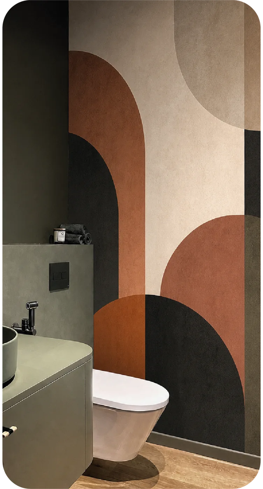

Muros e interiores
Murales decorativos o de marca adaptados a las proporciones del espacio.
Gran formato y superficies
Diseñamos soluciones para paredes, vitrinas, señalización y otras superficies, revisando el material, las medidas y la condición del soporte antes de producir.
Aplicaciones
El diseño se prepara para la escala real y el material se define según el uso, no solo por apariencia.
Murales decorativos o de marca adaptados a las proporciones del espacio.
Información, identidad y elementos gráficos aplicados sobre superficies compatibles.
Coberturas parciales o proyectos a medida, sujetos a revisión del soporte y del área.
Variaciones visuales
Muestras del archivo de CRK Publicity que ayudan a comparar estilos de mural. No representan un catálogo cerrado de materiales.

Mural geométricoTerracotaComposición abstracta Mural botánicoTropical terracotaIlustración de hojas
Mural botánicoTropical terracotaIlustración de hojas Mural tridimensionalHexagonal azulPatrón de profundidad
Mural tridimensionalHexagonal azulPatrón de profundidadProceso
Una instalación limpia comienza con archivos correctos y una superficie bien evaluada.
Confirmamos área, obstáculos, uniones y estado del soporte.
Adaptamos la composición a las medidas y revisamos zonas críticas.
Validamos material, acabado y condiciones antes de programar la instalación.
Preguntas frecuentes
No. Textura, humedad, pintura, limpieza y estabilidad del soporte influyen. La superficie debe revisarse antes de confirmar el material.
Sí, si tienes autorización y el archivo cumple las condiciones de tamaño, resolución, color y producción. Podemos revisarlo antes de imprimir.
Depende del adhesivo, del tiempo, del soporte y de su estado. No debe asumirse sin evaluar esas variables.
Necesitamos dimensiones, fotografías, ubicación, tipo de superficie, uso y alcance de instalación.
Evalúa tu superficie
Te diremos qué información hace falta para preparar una cotización responsable.
Servicios relacionados